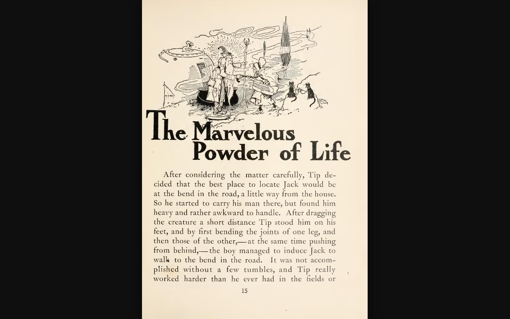
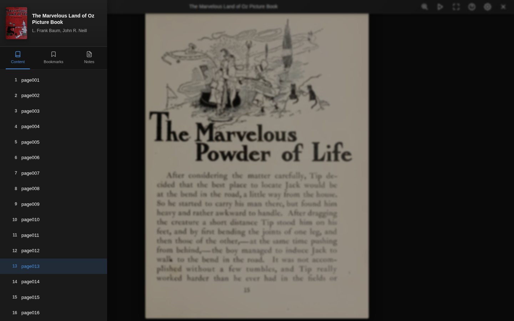
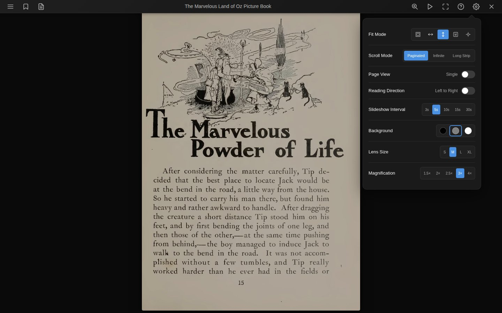
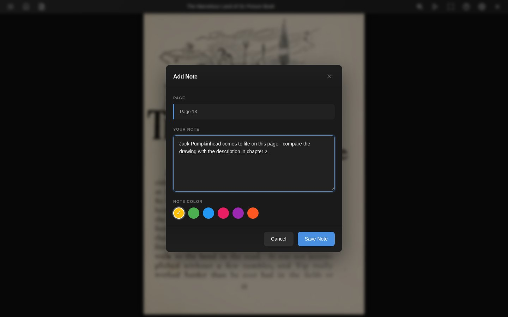
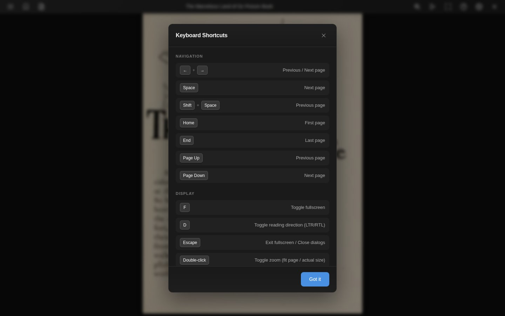

Comic reader
Trove's comic reader handles CBZ, CBR, and CB7 files with page-by-page navigation, two-page spreads, slideshow mode, bookmarks, notes, and customizable display settings.
Reading Interface

The reader displays comic pages with a header toolbar at the top and a progress bar at the bottom. Both auto-hide and reappear when you hover near the edges or tap the image.
Toolbar Actions
| Button | Action |
|---|---|
| Menu | Opens the sidebar with pages, bookmarks, and notes |
| Bookmark | Toggles a bookmark on the current page |
| Notes | Opens the note dialog for the current page (indicator dot when a note exists) |
| Play/Pause | Starts or stops the slideshow |
| Fullscreen | Enters fullscreen mode |
| ? | Shows keyboard shortcuts |
| Settings | Opens the settings panel |
| X | Closes the reader |
On mobile, Play/Pause, Fullscreen, and Help are moved into an overflow menu.
Sidebar

The sidebar has three tabs:
- Contents lists all pages by filename. Click a page to jump to it. The current page is highlighted.
- Bookmarks shows all bookmarked pages with their title and creation date.
- Notes lists all notes with a search box to filter by content.
Settings

Fit Mode
| Mode | Description |
|---|---|
| Fit Page | Fits the entire page in the viewport |
| Fit Width | Scales to match the container width |
| Fit Height | Scales to match the container height |
| Actual Size | Displays at the original image resolution |
| Auto | Automatically selects the best fit |
Scroll Mode
| Mode | Description |
|---|---|
| Paginated | Flip through one page (or spread) at a time (default) |
| Infinite | Continuous vertical scrolling through all pages |
| Long Strip | Long strip continuous scrolling (for webtoons) |
Page View
Toggle between Single page and Two-page spread. In two-page mode, wide pages (landscape images) are automatically displayed as a single page.
Reading Direction
Toggle between Left to Right and Right to Left. RTL mode reverses the page order in two-page spreads and flips the direction of swipe gestures and arrow keys.
Slideshow Interval
Auto-advance pages at a set interval: 3s, 5s (default), 10s, 15s, or 30s. The slideshow stops automatically at the last page and pauses on any user interaction.
Background
Three background colors: Black, Gray (default), or White.
Notes

Click the notes button in the toolbar to add a note to the current page. Each note includes:
- The page number (auto-filled)
- Your note text
- A color label (Amber, Green, Blue, Pink, Purple, or Deep Orange)
Notes are listed in the sidebar under the Notes tab where you can search, edit, or delete them. Click a note to jump to that page.
Bookmarks
Click the bookmark button to bookmark the current page. A red bookmark overlay appears in the top-right corner of bookmarked pages. Manage bookmarks from the sidebar Bookmarks tab.
Keyboard Shortcuts

Navigation
| Keys | Action |
|---|---|
← → | Previous / Next page (reversed in RTL) |
Space | Next page |
Shift+Space | Previous page |
Home | First page |
End | Last page |
Page Up Page Down | Previous / Next page |
Display
| Keys | Action |
|---|---|
F | Toggle fullscreen |
D | Toggle reading direction (LTR/RTL) |
Escape | Exit fullscreen or close dialogs |
Double-click | Toggle zoom (fit page vs actual size) |
Playback
| Keys | Action |
|---|---|
P | Toggle slideshow |
Touch
- Swipe left/right to navigate pages (direction respects RTL setting)
- Double-tap to toggle zoom
Reading Progress
Progress is saved automatically as you navigate. The reader tracks your current page and calculates a reading percentage. When you reopen a comic, it picks up where you left off.
Reading sessions are recorded with timing and page data.
Series Navigation
If the comic is part of a series, navigation buttons appear in the footer to jump to the previous or next book in the series.
Settings Persistence
Display settings can be saved globally (for all comics) or per book. The scope is controlled in Reader Preferences.